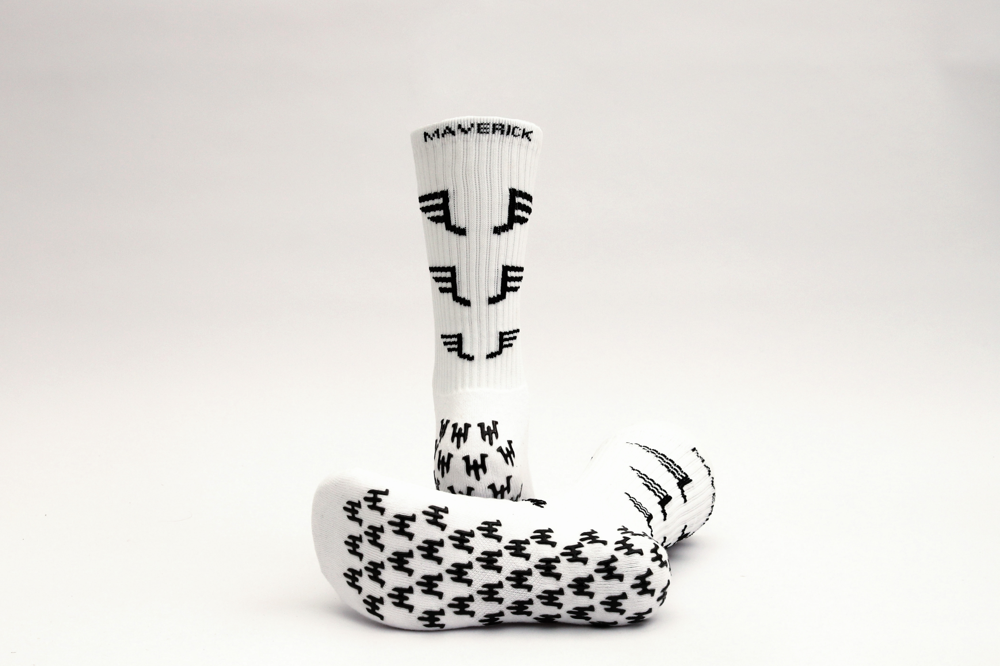
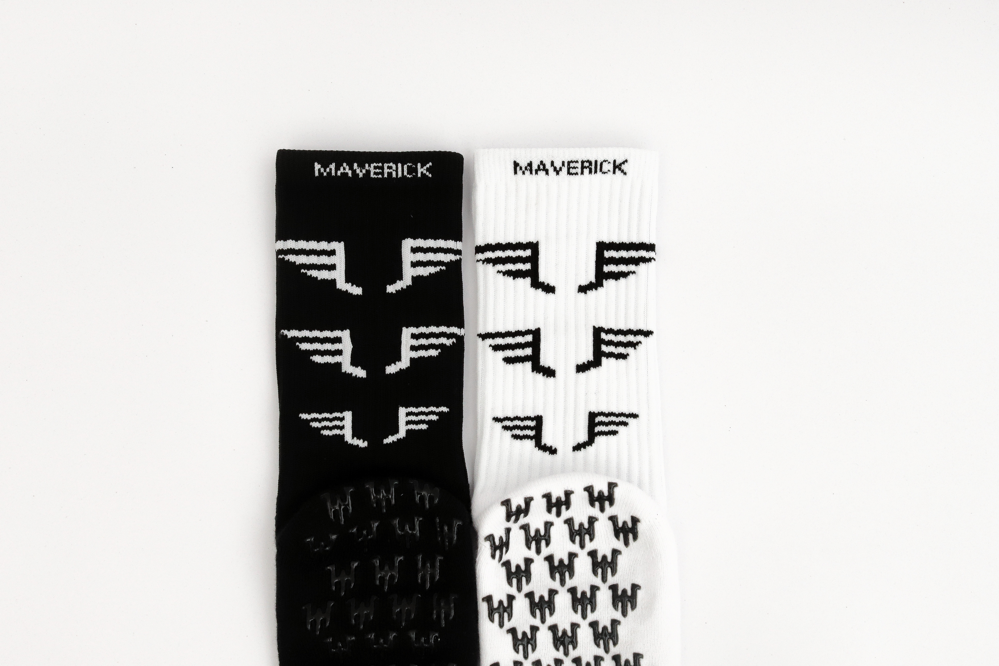

Grip inside and out
Frequent grip contact points on both sides of the sock increase traction between foot, sock and boot.
Sports Performance Grip Socks
Maverick grip socks put contact points on both sides of the sock — so your foot stays planted in the boot and the boot stays planted on the pitch.

One-size fit, UK 5–13. Free UK delivery over £30.
Checkout isn’t connected yet.
Add your Snipcart public API key in index.html to take live payments — see the README.
Every detail on a Maverick sock is there to keep you connected to the game.
Frequent grip contact points on both sides of the sock increase traction between foot, sock and boot.
Breathable mesh zones move moisture away from the foot and keep you comfortable for longer.
Strong silicone grips that bite harder as the socks warm up with your feet during play.
A thicker sole and reinforced toe cut friction to prevent blisters and add cushioning.
Each sock is shaped for an individual foot for a closer, more locked-in fit.
High-quality yarns hold grip and shape wash after wash, so performance lasts.

Black or white
Woven logo cuff, all-over wing motif on the leg, and a full-contact grip sole. Pick a colour or grab the mixed 3-pack and rotate them through the week.
Choose a pairMaverick grip socks are a one-size stretch fit that covers most adult feet.
| Region | Fits sizes |
|---|---|
| UK | 5 – 13 |
| US | 5 – 14 |
| EU | 37.5 – 48 |
Between sizes or after a snugger fit? Size advice is on every product and in the FAQ below.
Silicone pads on the inside of the sock stop your foot sliding around inside the boot, while pads on the outside grip the boot’s footbed. The result is less slip, faster changes of direction and better power transfer.
Yes. They’re designed to be worn instead of or underneath your normal team sock with football boots, futsal shoes, trainers and court shoes.
Machine wash cold at 30°C inside out, do not iron the grips, and air dry. Avoid fabric softener so the grips stay tacky.
UK delivery is a flat rate with free shipping over £30. Unworn socks in original packaging can be returned within 30 days. Full details are shown at checkout.